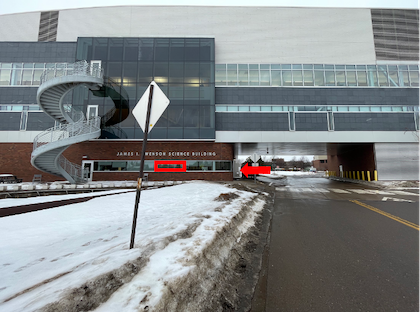

Lecture 01
Lecture 1: Syllabus
- Please look over the syllabus as it has all the details of the class and how it will run. It will serve as the tentative list of topics and what we will cover each day
Lecture 1: Who am I?
The objectives:
- Bill Perry - Bill or Dr. Perry
- Office is in SSB 13
- Phone 218-726-8145
- Email is wlperry@d.umn.edu

Lecture 1: My goals
- Help you learn the tools to organize and present data from potentially very large data sets
- How to use basic excel for some tasks
- How to use R - a coding language - to work with data and graphics
- How do we organize, clean, summarize, and view the data? The pipeline…
- How to formulate hypotheses
- How do we use statistics to test our hypotheses
- How to interpret what the data is telling us using statistics
Lecture 1: My expectations
- Communication
- Practice
- Failure
- Learn to correct and troubleshoot
Lecture 1: Science
- Way to acquire knowledge, organize it and apply it back to the real world
- Make predictions and testing these predictions using a falsifiable approach - statistics
- Explanations that cannot be falsified are not science
Today… real world data science
- talking about data science is SUPER BORING
- How do you tell a story with data using math - statistics - code
- This lecture and the next will be about how to work with data from the start
- Your task will be to collect data - organize it - get it into a spreadsheet
- Develop meta data
What will we do
- We are going to measure something
- My suggestion is leaf mass and surface area from a tree on the sunny side versus shady side?
- Do leaves respond to light intensity?
- What is the Null Hypothesis
- What is the Alternate Hypothesis
How does leaf size vary?
- Does the sunny and shady sides of trees differ due to light?
- What might we predict versus hypothesize
Predict
Hypothesize
How would we collect data to test this?
- Can we collect leaves from one tree to do this?
- YES?
- NO?
- Discuss
- What might be the effect if we used only one tree?
- How might that differ from many trees?
- Do we need to be sure our sample is randomly selected?
why do we need to randomize sampling?
how can we randomize our sampling?
What are the different variables we could record?
- What variables could we record about the tree?
- What variables could we record about the leaf?
- what is a dependent variable?
- [class discussion here]
- what is an independent variable?
- [class discussion here]
- what is a dependent variable?
Each group needs to collect at least 3 pairs of leaves
- How can we standardize our collections?
- A mature leaf from the sunny side and 1 leaf from the shady side?
- Do this on 2 separate trees - and for this we can use the trees others use as we are limited
- How high do we collect?
- Are there other things to do?
Back in the laboratory - before we even begin
- What are the steps we need to decide on when processing this data?
- What can we measure?
- mass?
- length?
- width?
- surface area?
- others?
Back in the laboratory - before we even begin
- How do you enter this into the excel sheet
- what does the sheet look like - mock up something to show the rest of the class?
- What are the terms you will use?
- What are the units?
- What is meta data?
- What vocabulary do you use?
Can you make a graph of the data in Excel based on what we collected?
- what would the graph look like?
- what can you derive from the data?
Before Thursday Install R and Positron
Downloading R and Positron:
- Download R - download here
- downloads to your computer - can you find it?
- Download Positron - download here
- downloads to your computer - can you find it?